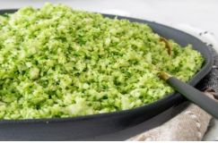

Brócolis

Benefícios
Auxilia na digestão, contém
antioxidantes e estimuladores de enzimas
desintoxicantes. Suas fibras solúveis ajudam a
controlar os níveis de colesterol no organismo.
Mantém os vasos sanguíneos mais fortes,
controlando a pressão arterial. Ele também possui
propriedades anti-inflamatórias que previne lesões
nos vasos sanguíneos e doenças nas artérias
coronárias (BARAÑANO, 2019).
Rico em vitamina A, C, B1, B2, B6, K, cálcio, potássio, ferro, zinco e sódio. Possui antioxidantes como carotenoides, luteína e zeaxantina
Esse produto possui agrotoxico*
Produto colhido na fazenda São Jão*
Receita: Arroz de Brócolis
Rendimento: 4 porções / Tempo de Preparo: Aproximadamente 15 min
Ingredientes
- 1 cabeça de brócolis (higienizada)
- 1 colher (sopa) de azeite
- 1 cebola pequena, picadadinha
- 1 dente de alho (picado)
- Sal a gosto
Modo de Preparo
- Cortar a cabeça do brócolis ao meio e remover todas as florzinhas.
- Apar as folhas do caule e cortar o talo em pedaços de 2cm.
- Colocar todos os pedaços de brócolis em um processador de alimentos e pulsar até quebra-lo em pedaços do tamanho de arroz.
- Aquecer o azeite e refogar a cebola e o alho.
- Adicionar o arroz de brócolis à frigideira e refogar por mais 3 a 4 minutos.
- Tempere com sal e sirva.